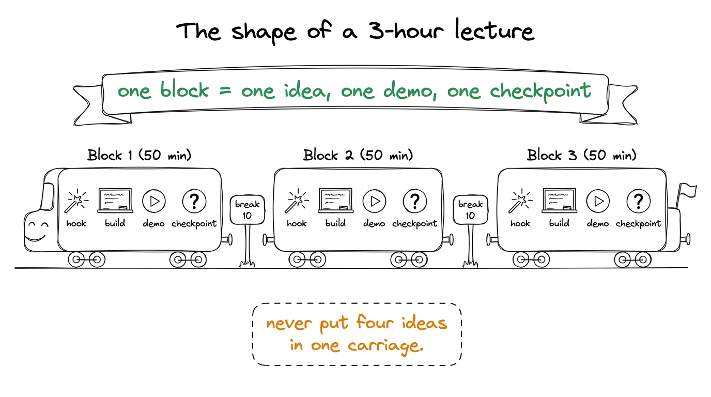
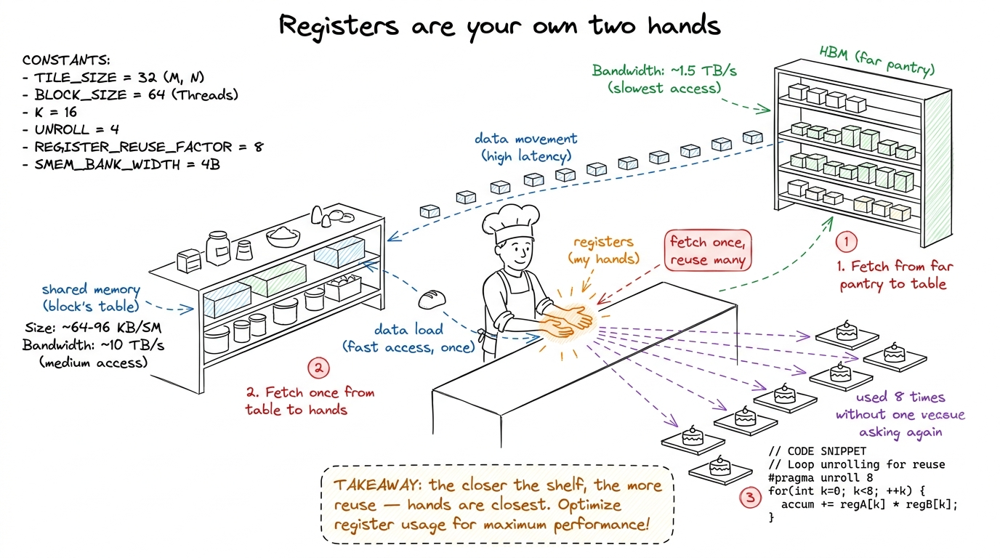
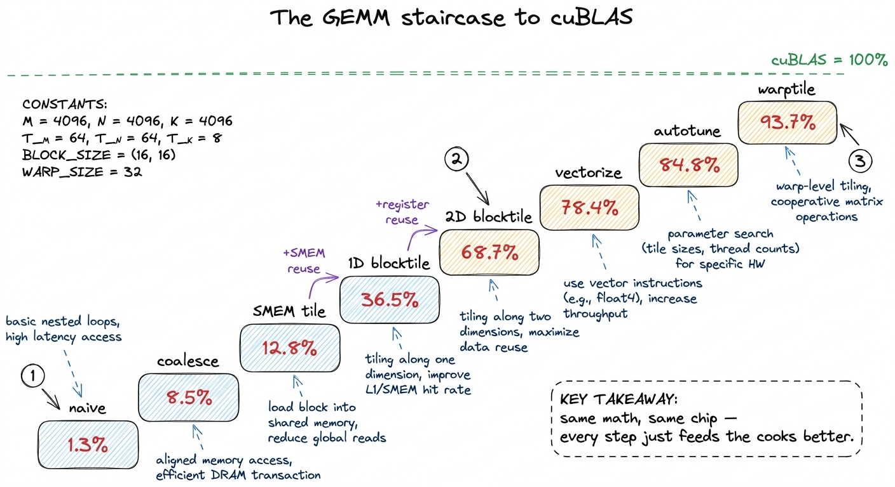
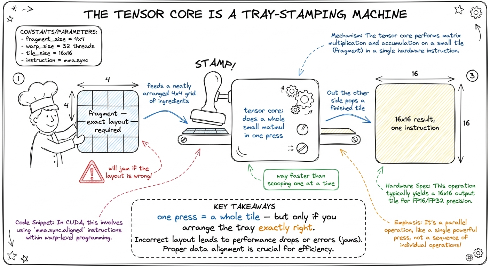
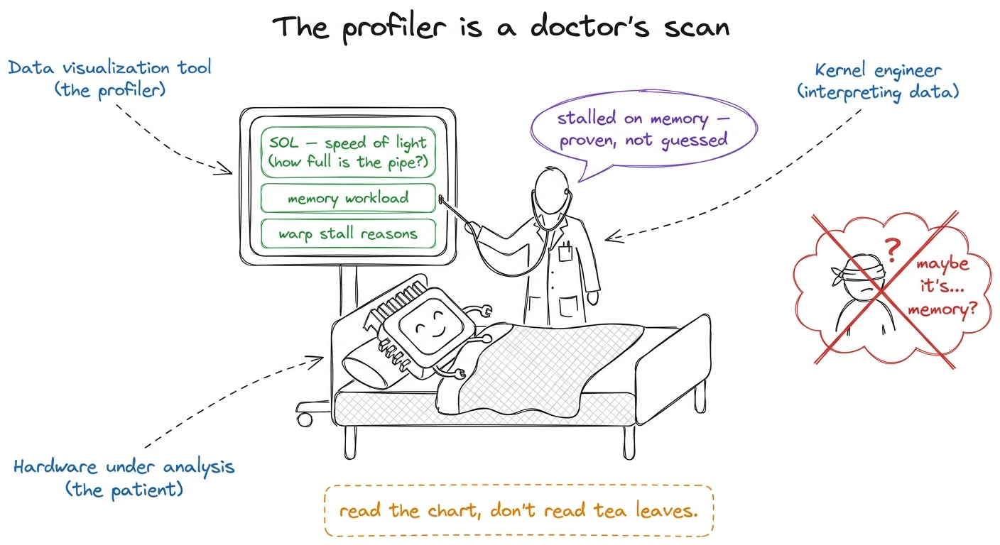
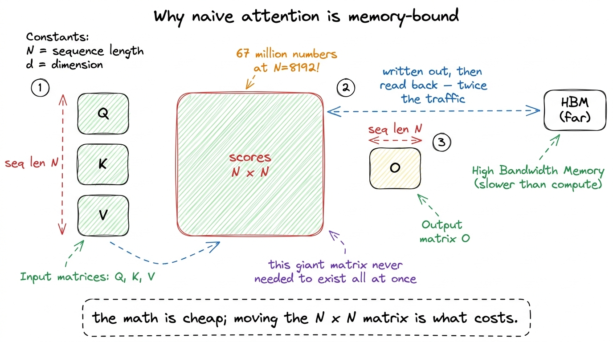
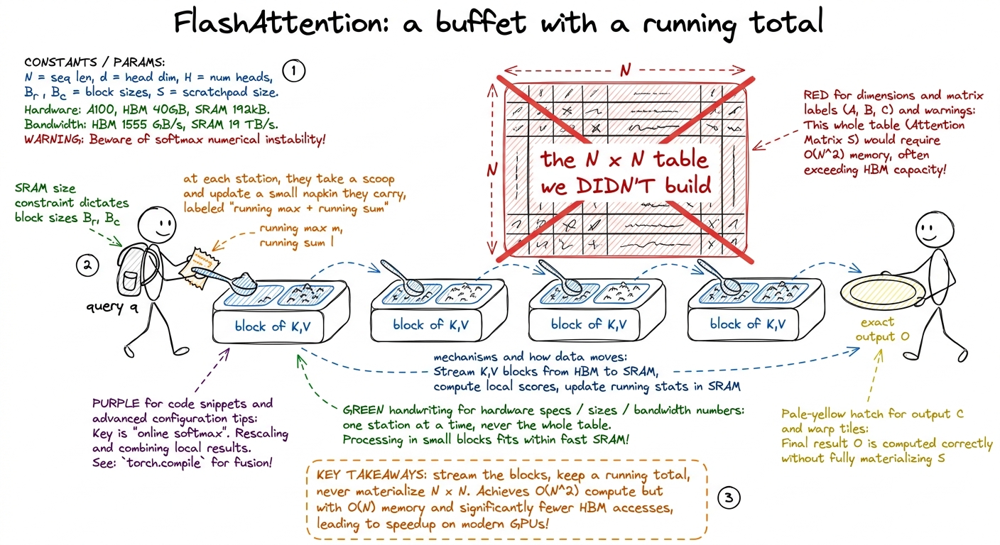
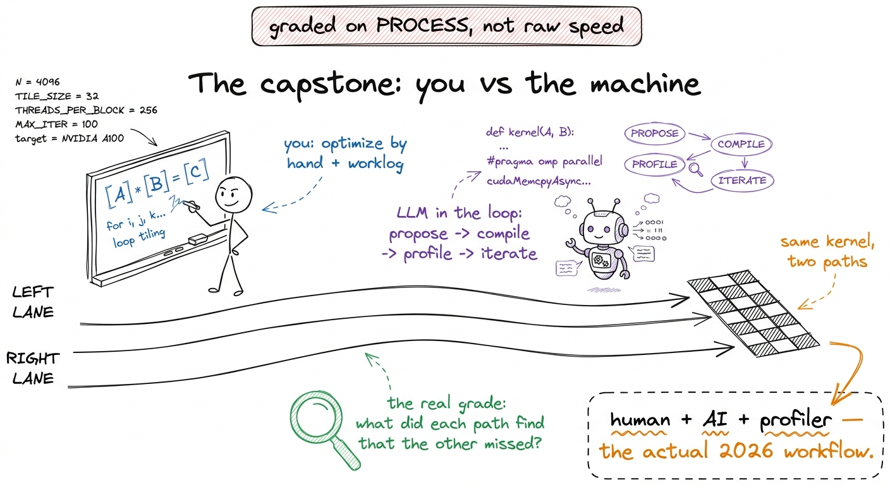

Lecture plans: L5–L8, minute by minute
By the end of this chapter you can stand in a three-hour room and run lectures L5 through L8 — the GEMM finale, tensor cores, professional profiling, and attention — minute by minute, knowing exactly what goes on the board, which single demo to run, and the one number that makes each block land.
This is a delivery-craft chapter. You already learned the ideas in the earlier chapters — matmul as a grid of dot products, the GPU as a cafeteria that must be fed. Here you learn how to pace them. A three-hour lecture is not a document you read aloud. It is a performance with a rhythm: reveal, demo, breathe, checkpoint. Get the rhythm right and even hard material feels easy.
The shape of every three-hour night
Every one of our live lectures is built the same way: three 50-minute blocks with two 10-minute breaks. Never fight this structure. A block is one idea, one board sequence, one demo, one checkpoint question. If you find yourself with four ideas in a block, you have two blocks pretending to be one.

figure rendering · The universal rhythm: three blocks, each a self-contained idea-demo-chNow let's walk the four lectures.
---
L5 — GEMM worklog II: the finale (registers → warps)
The one-sentence goal for the room: we take our matmul from one-third of NVIDIA's own library to matching it, and we do it by climbing one rung at a time and reading the machine code to prove each rung worked.
L5 is the emotional peak of the whole GEMM story. In L4 the students got to 36.5% of cuBLAS. Tonight they get to 93.7%. That climb is the payoff of four weeks. Your job is to make each rung feel earned, not magical.
Block 1 (0:00–0:50) — Registers: the fastest shelf (K5, K6)
Start by re-drawing the memory hierarchy from memory — HBM far away, shared memory close, and registers, the tiny shelf inside each worker's own hands. Then state tonight's whole thesis in one line.
Build kernel 5, 2D blocktiling, on the board as a picture, not as code first. Each thread now computes not one output element but a small square of them — say an 8×8 patch. Why does that help? Because once a value is in your hand, you can multiply it into eight results instead of one. You paid to fetch it once; you cash it in eight times.

figure rendering · The register tier taught as a cook's own hands: fetch a value once froThen kernel 6, vectorized loads (float4 / LDS.128). The idea in plain words: instead of asking the pantry for one number four times, you ask for four numbers in one trip. Same data, one quarter of the requests.
float4 kernel, dump both to assembly, and put them side by side on the projector. In the old one, the inner loop shows eight separate LDG.E load instructions. In the new one — two LDG.E.128. Say: "Eight loads became two. The compiler is now asking for four numbers per trip." Watching real machine code change in front of them is the moment students stop believing this is abstract.Kernel 6 reaches 78.4%. Close Block 1 with a checkpoint.
Block 2 (1:00–1:50) — Autotuning and warptiling (the summit)
Come back from break with autotuning. Plain words: we have knobs — tile sizes, patch sizes — and nobody is smart enough to guess the best combination. So we let the machine try hundreds of combinations and keep the fastest. Autotuning takes us to 84.8%.
Then the summit: warptiling. This one needs the warp concept fresh, so re-draw it — a warp is a gang of 32 threads that always move in lockstep, like a rowing crew pulling on the same stroke. Warptiling adds a middle layer of organization: the block is split into warps, each warp owns a region, and within a warp the 32 threads cooperate tightly. It hits 93.7% of cuBLAS.

figure rendering · The whole GEMM arc as one staircase: eight rungs from 1.3% to 93.7% ofBlock 3 (2:00–2:50) — Live: read the SASS, count the instructions
The third block is hands-in. Have students run the profiler (ncu) on kernels 5 and 6 themselves and read the instruction-issue counts. The goal is not new theory — it's confidence that the numbers on the board are real and reproducible.
---
L6 — Tensor cores: the second worklog
The one-sentence goal: there is a second, hidden engine on the GPU built only for matmul — the tensor core — and tonight we learn to feed it, beating our own best kernel from L5.
The framing that makes L6 click: L4–L5 was a worklog on the normal math units (the CUDA cores). L6 is the same kind of ladder, but on a different engine. Same rhythm — hypothesis, code, profile, percent — just aimed at a specialized machine.

figure rendering · Tensor cores taught as a tray-stamping machine: it plates a whole tileBlock-by-block
Block 1 (0:00–0:50) — The instruction and the fragment. Introduce wmma / mma.sync: the single instruction that multiplies two small matrices. Introduce the fragment — the specific way each thread must hold its slice of the data in registers. Do a tiny by-hand example: a 16×16 by 16×16 tile becomes one conceptual instruction instead of thousands of FMAs. Checkpoint: "How many multiply-adds is one wmma doing under the hood?" (Thousands — that's the point.)
Block 2 (1:00–1:50) — The precision menu and swizzling. Walk the precision menu on the board: TF32, BF16, FP16, FP8 — fewer bits means more throughput but less numerical room. Then the hard part: SMEM swizzling to kill bank conflicts. Plain words: when 32 threads all grab from shared memory, if they collide on the same "bank" they queue up; swizzling shuffles the layout so nobody collides.
Block 3 (2:00–2:50) — Live: WMMA beats our best SIMT kernel. Run a WMMA GEMM and watch it beat the 93.7% kernel from L5. Open ncu and show the tensor-pipe utilization metric climbing. End with where this goes next.
---
L7 — Profiling and debugging like a professional
The one-sentence goal: tonight students stop guessing and start diagnosing — reading the profiler like a doctor reads a chart, and hunting three real bugs to ground.
L7 is different in flavor: less new theory, more craft. The metaphor to open with is medical.

figure rendering · Profiling taught as diagnosis: the good engineer reads the scan (SOL,Block-by-block
Block 1 (0:00–0:50) — Reading Nsight Compute. Do a slow, guided read of one real ncu report on the projector. SOL section first ("what percent of peak are we at — the master question from L1, now measured"). Then memory workload analysis. Then warp stall reasons — the single most useful panel, because it tells you why threads are waiting. Checkpoint: "A kernel is at 20% SOL and the top stall reason is 'long scoreboard.' Compute-bound or memory-bound?" (Memory-bound — they're waiting on data.)
Block 2 (1:00–1:50) — The debugging toolkit. Walk the real vLLM-style workflow: compute-sanitizer for races and bad memory access, handling hanging kernels, user-triggered core dumps (CUDA_ENABLE_USER_TRIGGERED_COREDUMP), cuda-gdb, and -lineinfo so the assembly points back to your source lines. Keep it practical — these are tools, introduced by the problem each one solves.
Block 3 (2:00–2:50) — Live: three sabotaged kernels. This is the block students remember. Hand them three broken kernels and diagnose each live: a race condition, a misaligned vector load, and a silent NaN.
compute-sanitizer prints the exact conflicting threads. For the misaligned float4 load: the sanitizer flags the misaligned address. For the silent NaN: turn on the checks and watch where it first appears. The lesson lands itself — "I didn't stare at the code and get lucky. I asked the tool and it told me." That is the entire ethos of L7.---
L8 — Attention: the kernel that ate the world (+ capstone kickoff)
The one-sentence goal: tonight we build the single most important kernel in modern AI — attention — see why the naive version chokes on memory, fix it with FlashAttention's tiling, and launch the capstone.
This is the finale of the eight lectures, so it carries weight. Structure it as: build attention → show why it's broken → fix it → hand them the capstone.
Block 1 (0:00–0:50) — Attention is just matmuls and a softmax
Build attention from parts they already own. Q, K, V are three matrices. Scores = Q times K-transpose (a matmul they can already do). Softmax turns scores into weights (a normalization — big scores win, everything sums to 1). Output = weights times V (another matmul). That's it.
Then the catch. For a sequence of length N, the score matrix is N×N. At N = 8192 that is 67 million numbers — for one head, one layer. Writing that giant matrix out to HBM and reading it back is the whole cost.

figure rendering · The core problem of attention: the N-by-N score matrix is enormous, anBlock 2 (1:00–1:50) — Online softmax and FlashAttention tiling
The fix has two parts. First, online softmax: you can compute a softmax in streaming chunks, keeping a running max and running sum and rescaling as you go — you never need the whole row at once. Do a tiny by-hand example with three numbers arriving one at a time so they see the running max update.
Then FlashAttention tiling: walk over K and V in blocks, compute partial results in shared memory, rescale with the online-softmax bookkeeping, and accumulate. The N×N matrix is never materialized in HBM. Build FA v1 live, simplified, single head.

figure rendering · FlashAttention as a buffet eaten one station at a time with a runningBriefly name what FA2 and FA3 change (better work partitioning across warps; on Hopper, warp specialization and asynchrony) — as a preview to W1, not a deep dive. Then the KV-cache note: during generation each new word attends to all previous ones, so decode becomes a skinny matrix-times-vector (GEMV) that is memory-bound, not compute-bound. This is the bridge to the inference workshops.
Block 3 (2:00–2:50) — Capstone kickoff: "You vs the machine"
Close the eight lectures by handing over the signature capstone. Explain it slowly because it defines the rest of the workshop.
Each student picks one operation — histogram, SwiGLU, a FlashAttention variant, or a heat-equation kernel. They optimize it by hand, keeping a worklog. Then they run an LLM in the loop — propose, compile, profile, iterate — against their own kernel. The deliverable documents both tracks and, crucially, what each one found that the other missed.

figure rendering · The capstone framing: optimize a kernel by hand and with an LLM-in-the1 If the room is running behind on L8, protect Block 2. You can compress the FA2/FA3 preview and the KV-cache aside to two minutes each, but never rush the online-softmax by-hand demo — it is the one thing that makes FlashAttention click, and a confused room here undermines the capstone.
2 For L5, if ncu access is flaky in the room, pre-record the SASS diff and the profiler screens the night before. The demo's power is in seeing eight loads become two; a screenshot delivers that just as well as a live run, and removes the risk of a failed live command killing your momentum at the summit.
---
You can now teach
- L5 minute by minute: the register-and-warp climb from 36.5% to 93.7% of cuBLAS, with the SASS-diff demo (eight loads → two) as the centerpiece and the eight-rung staircase as the jaw-drop.
- L6 minute by minute: tensor cores as a tray-stamping machine, the fragment layout and precision menu, swizzling to kill bank conflicts, and the live WMMA kernel beating your best SIMT kernel.
- L7 minute by minute: the profiler as a doctor's scan (SOL, memory workload, stall reasons), the real debugging toolkit, and the three-sabotaged-kernels live diagnosis.
- L8 minute by minute: attention as matmul-softmax-matmul, why naive attention is memory-bound (the 67-million-number N×N matrix), online softmax by hand, FlashAttention tiling built live, and the "you vs the machine" capstone kickoff.
- The universal pacing craft: three 50-minute blocks, one idea and one demo and one checkpoint per block, the block map left on the board, and the discipline to protect the one by-hand demo that makes each lecture click.